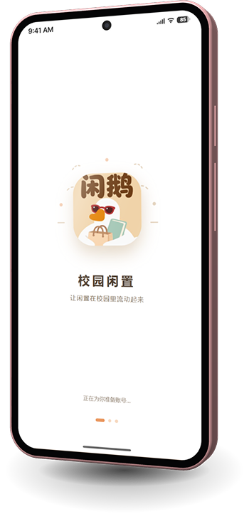
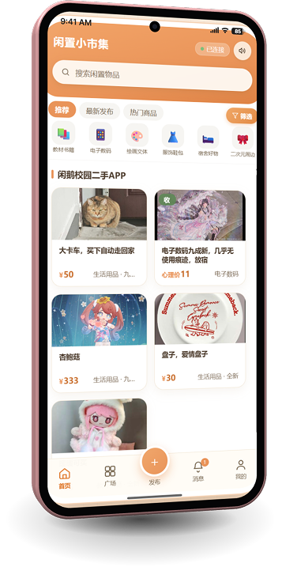

大平台赢在流量，输在「最后一公里」
物流与快递对几十块的旧教材太重；「今天下午顺路拿到」才是校园高频场景。
这是「闲鹅」——一个面向大学生的校园二手闲置平台——从最初的想法，到团队讨论、问卷访谈， 再到网页与 App 落地、真实测试与2.0 → 3.0 升级的完整过程记录。 我们想把「定价难、消息被刷走、沟通费劲」这些买卖二手时真实的坎，一个个搬走。



每个宿舍角落都堆着「懒得卖」的东西：教材、台灯、小家电。不是不想卖，而是 定价没参照、消息被刷走、和陌生人沟通太费劲。我们把这些原话写成 POV，再转成 HMW。
来自宿舍夜谈的真实抱怨，也是问卷里被提到最多的痛点。
熟人渠道有信任，但信息无法沉淀、无法检索。
大平台解决「买得到」，却没解决「今天下午顺路拿到」。
讨论从三件事开始：竞品到底解决了哪一段、问卷该怎么问、别人已经做到了哪里。 工具的目的不是收集答案，而是尽快排除错误的假设。
姓名 / 组名：丁雯静 · 选题：校园二手平台 · 核心用户任务：三个方案比较同一个任务（例：找到一个现在能用的自习位置）
| 比较维度Dimension | 直接竞品相同问题 · 类似产品 | 间接竞品相似需求 · 不同方式 | 替代方案用户现在怎么解决 |
|---|---|---|---|
| 产品名称Name | 咸鱼、转转 | 小红书 | QQ、微信二手物品群 |
| 目标用户Who | 为二手出售的人 | 年轻人 | 同学 |
| 核心问题What | 通过官方平台有保障地出售二手物品（二手电子产品），了解市场价格 | 发帖询问市场需求，浏览类似物品需求 | 方便同校出物，没有平台赚取手续费，没有邮费 |
| 关键流程How |
|
|
|
| 做得好Experience | 商品基数大，担保交易 | 有平台保障，二次元、追星周边圈层曝光好 | 无平台手续费，自理便捷 |
| 不足Experience | 用户混杂，帖子易下沉，本校比价难，平台手续费 | 重图文包装，无同校分区，交易流程割裂 | 消息快速被刷走，需反复刷屏；无分类检索、比价功能；无交易担保 |
大学生校内闲置交易渠道分散，拼单、代取等需求无法统一解决。
现有渠道普遍存在帖子易沉没、同校比价困难、功能割裂、交易风险等痛点。
搭建本校专属平台，闲置比价为核心，整合拼单、代取快递等校内服务。
通过问卷、用户访谈验证需求真实性。
※ 比较时记录操作步骤、截图和体验依据，区分观察事实与推测；不能实际体验时标注「待核实」。
先写清楚你做的产品、目标用户和核心问题。别急着找竞品。
记住：竞品不一定是一项产品——相似产品是直接竞品，相同需求不同方式是间接竞品，用户手动替代是替代方案。
按用户、问题、流程、好与不足逐行拆，不要只罗列功能。
每个格子都标注「待验证的设计机会」，对比的终点是判断。
| 错误类型 | 常见写法 ✗ | 改进写法 ✓ |
|---|---|---|
| 只看功能，不看策略 | 整个表格都在罗列竞品有什么功能 | 标注每项功能背后要达成的目标 |
| 只做对比，不做判断 | 把「谁更好」写成小作文 | 用「做得好 / 不足 / 机会」三栏下结论 |
由调研板「竞品分析模板 + 竞品对比表」重建为网页表格，非截图。
现有二手微信群、闲鱼的使用麻烦点——邮费、自提、定价难、交易信任问题。
① 校内寝室点点跑腿代送；② 历史成交记录辅助定价——看学生是否愿意使用。
收集二手品类、交易习惯、信任顾虑、付费意愿，为功能优先级、界面设计提供依据。
组合使用【线上问卷 + 微访谈】
问卷：面向大范围在校生，快速统计整体偏好、使用频率、价格接受度，适合量化数据。
访谈：挑选有二手买卖经验的同学深度聊天，挖掘问卷看不到的细节——比如跑腿安全顾虑、定价时的纠结、担心被骗等隐性问题。
每周几次？了解使用强度——过去【1 周】内，有几次【浏览 / 发布闲置】？
限定时间范围——最近【1 个月】里，【搜寻闲置】几次？
判断态度强度——你觉得【闲置定价难】问题严重吗？（1–5 分）
比较参照系——和【其他二手渠道】比，你满意度打几分？（1–5 分）
调研对象：本校在校本科生、研究生。问卷计划回收 120 份以上，覆盖不同年级、不同院系；访谈 8~10 人，筛选经常在二手群 / 闲鱼买卖闲置、愿意尝试校内跑腿的同学。
调研地点：问卷——微信朋友圈、班级群、校园闲置群线上发放；访谈——线下空闲教室 / 校园安静长椅，或线上语音。
分工：主负责人——统筹进度、邀约访谈对象、整理最终调研报告；记录员——访谈文字记录、整理问卷回收数据与原始材料。
问卷重点：是否买 / 卖过校园闲置、平时在哪交易、最讨厌什么问题；是否愿意寝室点点配送；能接受的跑腿费用；会不会参考历史成交定价；担心哪些风险（物品损坏、跑腿人员安全、交易纠纷）。
访谈重点：交易踩过什么坑；如果有跑腿，下单和收货最在意什么；定价一般怎么估；对 App 还有什么额外期待。
| 坑 | 常见写法 ✗ | 改进写法 ✓ |
|---|---|---|
| 一题问两件事 | 「发布 & 沟通 & 你会觉得麻烦吗？」 | 拆开问：发布麻烦吗？沟通麻烦吗？ |
| 选项不周全 | 「使用频率：1–3 / 3–5 / 5 次以上」（漏了 0 次） | 加「0 次」，覆盖不使用者 |
| 带倾向的选项 | 「它是非常好用还是太难用？」（暗示难用） | 改中性：使用中经常遇到哪些问题？ |
| 问未来不问过去 | 「以后会经常用这个 App 吗？」 | 问真实行为：你最近一次没买成的东西是什么？ |
一题一问
一个问题，只问一件事
选项周全
不重叠、覆盖所有情况，留「其他」
保持中立
不暗示答案，不带预设判断
真问具体
问真实发生的事，不问想象
100 份不等于全校的代表性——实训题：问卷到底发给了谁？
只在社群发问卷，结果更能代表「活跃的那群人」。
「点外卖多的同学不太去第一饭堂」不构成结论。
30 人没回答的题，可能是问题模糊、羞于开口，别直接计入平均。
由调研板「问卷话术模板（两页）+ 执行计划 + 问卷提交卡」重建为网页内容，非截图。
由讨论板内容重新排版为网页便签，非截图。
物流与快递对几十块的旧教材太重；「今天下午顺路拿到」才是校园高频场景。
微信群消息无法沉淀、不可检索、没有担保；信任是现成的，缺的是工具。
学号认证建立信任，驿站自提顺路交付，AI 识别降低发布成本——三者叠起来才成立。
用户旅程地图还原一个人的语境，亲和图找出多数人的共性——每条设计决策都能对应回某张便签。
小陈 · 20 岁
在校大学生
买卖二手物品
高效买卖二手物品
由调研板「用户旅程地图」逐格提取重建为网页表格（小陈 · 20 岁 · 在校大学生），非截图。
由调研板「EMPATHY MAP · 校内二手市场交易平台」受访者 01 地图逐条提取（共 6 位受访者，此处展示典型一张），非截图。
回复效率低，商品实际状态可能跟帖子描述不一致
商品管理混乱，发布帖子麻烦
高效率的解决闲置物品或者快速找到需要的物品
对卖家发布的帖子做出要求（与实际情况相符）；对不同商品分类，方便买家快速定位；设置一些市场参考价；设置售后服务
高：沟通回复低效率、商品管理混乱、发布帖子麻烦
中：定价比价困难、快速流程中遇到时间长价格高的问题、售后问题
低：物品交易信任不足、交易缺保障
待讨论
由超宽拼板「AFFINITY MAPPING」逐条提取：25 条原话（E01–E25，受访者 P01 小陈 / P02 压了 / P03 了了 / P04 大黄 / P05 泡芙 / P06 章章）→ 7 组主题 → 洞察总结，非截图。
先做一次小样本演练：把 15 条原话逐条编码，试贴到 5 组主题里，统一规则后再上全量数据。
方法演练示意，内容取自真实编码规则。
POV 依据亲和图原话簇重述（E 编码对应上方原始资料）。
依据洞察搭出产品骨架：五大模块覆盖「逛 → 搜 → 发 → 聊 → 管」全流程， AI 负责降低发布门槛，驿站自提负责解决交付。
食品零食，九成新，几乎无使用痕迹
开叉打版尺
手办摆件，闲置出
小女仆一只，不干活只吃东西
AI 识别后自动生成标签，也可手动选择：从全部标签中选择（可搜索）
上传照片自动识别物品、生成标签与描述，也可手动修改；定价给出「闲鹅推荐价」做参照。
在线习惯与交易偏好进档案，为相似用户匹配做铺垫；回夏速度、常在线时段可选。
商品标注「东门驿站自提 / 送到楼下」，卖家备注位置会展示给买家，交易方式一目了然。


拖动中间的竖线（也可点击任意位置或按 ← → 方向键），线滑到哪里就切换哪里
调研里出现频率最高、但我们还没来得及做完的事，排进了 3.1 的清单。